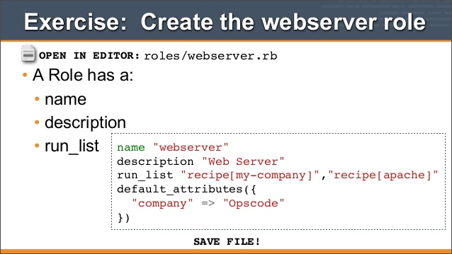
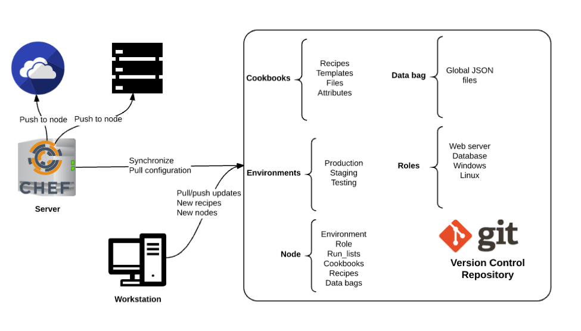
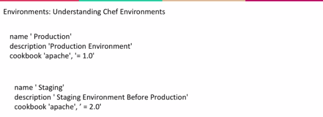
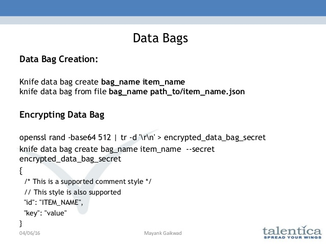

Server Artifacts
In addition to storing cookbooks, the Chef Server can also hold additional pieces of policy - artifacts that nodes can utilize for more specific configurations.
Thse include roles, environments, and data bags.
Roles
• A role describes a run list of recipes that are executed on the node.
• A role may also define new defaults or overrides for existing cookbook attribute values.
• When you assign a role to a node, you do so in its run list.
• This allows you to configure many nodes in a similar fashion.
Example web role:

Environments
• Environments can define different functions of nodes that live on the same system.


Bootstrapping with a Role and Environment
knife bootstrap FQDN -x USER -P PWD --sudo -N NAME --r "role[web]" --E production
Data Bags
• A data bag is a container for items that represent information about your infrastructure that is not tied to a single node.
